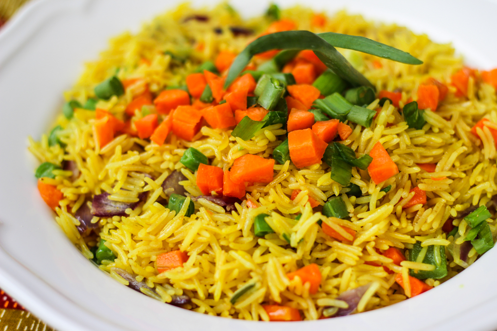

Home
Fried Rice

Description
Nigerian Fried Rice is a flavorful, richly garnished rice dish cooked in a seasoned stock,
featuring parboiled rice, mixed vegetables, and often protein like chicken, shrimp, or liver,
and is a popular party dish.
Ingredients
- 3 cups long-grain parboiled rice
- 1 cup diced carrots
- 1 cup green peas
- 1 cup diced green bell pepper
- 1 cup diced red bell pepper
- 1 cup liver (diced) or shrimp
- 1 cup diced onions
- 1 teaspoon garlic (minced)
- 1 teaspoon ginger (minced)
- 1 cups chicken stock
- 1 teaspoon thyme
- 1 teaspoon seasoning powder or bouillon cube
- Salt to taste
- half cup of vegetable oil
- 1 cup diced chicken or beef
Steps
- Wash the rice thoroughly and parboil for about 10 minutes until it is half-cooked.
Rinse under cold water and drain.
- If using chicken, season it with salt, curry powder, thyme, seasoning cube, and white pepper.
Boil until fully cooked, then separate the stock and set it aside.
- In a pot, pour in the chicken stock and add curry powder for color.
- Add the half-cooked rice, cover,
and cook on low heat until the liquid is fully absorbed and the rice is cooked.
- Add diced liver (or shrimp/chicken) and sauté for 2–3 minutes.
- Add onions, garlic, and ginger, then stir-fry until fragrant.
- Add carrots, peas, sweet corn, bell peppers, and any other veggies.
- Stir-fry for about 3–5 minutes while maintaining their crunch.
- Add the cooked rice to the stir-fried mixture in batches.
- Stir continuously to mix the flavors and ensure even distribution of ingredients.
- Adjust seasoning with salt, seasoning powder, or more curry if needed.
- Let everything heat up evenly for about 3 minutes.